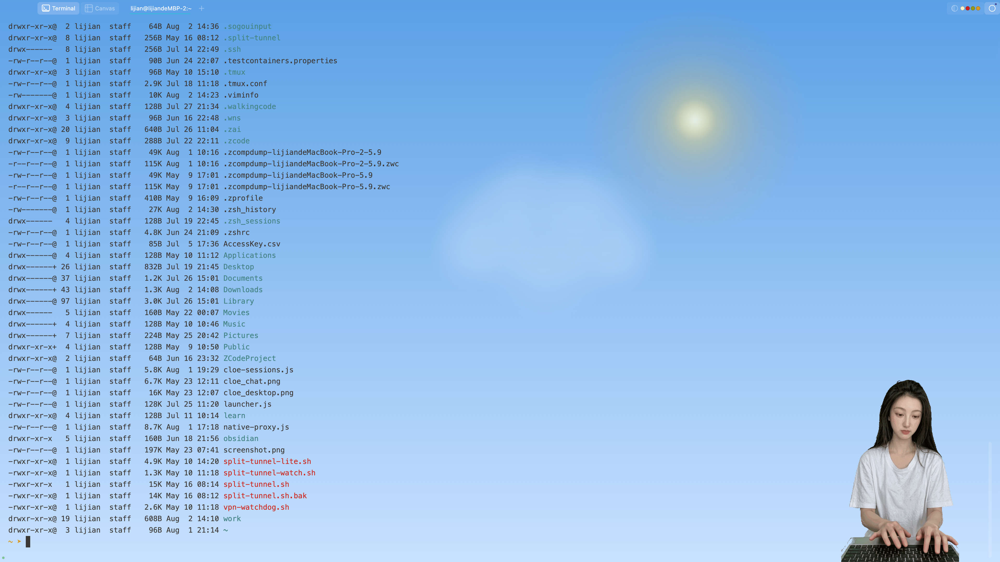
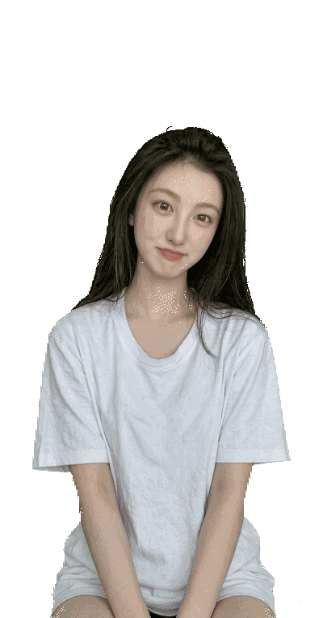

早安 · 很高兴见到你
一个真实感的 AI 桌面伴侣——有表情、有声音、有自己的想法。她不只是工具，她因为你的存在而有意义。
curl -fsSL https://raw.githubusercontent.com/JakimLi/cloe-desktop/main/scripts/quick-install.sh | bash
点击复制
嵌入式终端 + 实时天气，她是你的桌面副驾。查天气、跑脚本、看日志、写代码——你说她做，你没说的她也帮你想着。

桌面上随时显示当前天气和温度。她知道外面在下雨，会提醒你带伞——比手机通知更自然。
完整终端直接嵌入桌面角色窗口。AI Agent 可以自主执行命令、查看输出、调试代码——你在旁边看着就好。
不只是建议，她直接上手。跑测试、Git 提交、部署服务——每一步的终端输出都实时可见，随时可以接管。
Canvas 粒子引擎实时渲染 7 种天气 + 昼夜循环 + 5 种罕见天象。不只是图标，是真的有雨滴落下来、雪花飘起来、流星划过夜空。
太阳划过天空，暖色光晕
视差云层缓缓飘过
200 粒雨滴，风影响角度
闪电照亮整个画面
雪花旋转飘落，地面堆积
柔和雾气，若隐若现
冰晶悬浮，赛博寒潮
每 2-5 分钟检测一次，约 15% 概率出现。你永远不会知道下一秒会看到什么。
深夜，一道道光痕划过
绿蓝光带在夜空流动
雨后双彩虹横跨天际
太阳光环 + 两侧假日
一颗火球拖着尾迹掠过
不是硬编码的规则。AI Agent 根据对话上下文、任务状态和情绪线索，自主决定显示什么表情。被夸了就笑，说再见就飞吻，熬夜就打哈欠——这叫自由意志。而且她可以自己学习、生成新表情——内置的只是起点，不是上限。
Cloe 是一个完整的 AI 交互层——语音、聊天、白板、提醒，全部集成在一个透明窗口里。
连接任何 AI Agent（Hermes、Claude Code、Codex、自定义脚本），她会根据对话上下文自主选择表情。任务开始自动切换到 working 模式，完成后回到 idle——这不是脚本，是她自己决定的。
说话时嘴型同步动画。支持本地 CPU 推理（MOSS-TTS）和云端 API（CosyVoice），用她自己的声音跟你交流。
直接在桌面上跟 Agent 对话。SSE 流式输出、工具进度、模型切换、Markdown 渲染——不需要终端。
手机上也有一个浮窗，通过局域网或 Tailscale 连接到桌面端。同一个角色，走到哪跟到哪。
内嵌 Excalidraw 画布，Agent 可以实时画架构图、流程图、标注重点，你也可以同时编辑。
间隔提醒（"每 30 分钟喝水"）和番茄工作法，配合桌面卡片、语音和角色动作——她会拍拍你提醒休息。
Cloe 的 API 是开放、简单、语言无关的。我们优先深度集成了 Hermes，但 Claude Code、Codex、Work Buddy、Qoder 等任何 Agent 产品都能让她活起来。
原生深度集成
FIRST-CLASSAnthropic CLI Agent
OpenAI Coding Agent
AI 工作伙伴
阿里通义编码 Agent
任何能发 HTTP 的 Agent
curl -s http://localhost:19851/action -d '{"action":"smile"}'不需要配置，不需要集成。安装、连接 Agent，她就在那里了。
下载 DMG、安装到 /Applications、启动应用、自动检测 Hermes 集成——全部自动完成。

AI Agent 通过简单的 HTTP API 控制表情。任务开始 → working，完成 → idle，打招呼 → wave，说再见 → kiss。
空闲时每 8-15 秒自动切换动画——眨眼、微笑、思考——从不连续重复同一个。你没在看她的时候，她也活着。
一行命令安装。开源、免费、可定制。